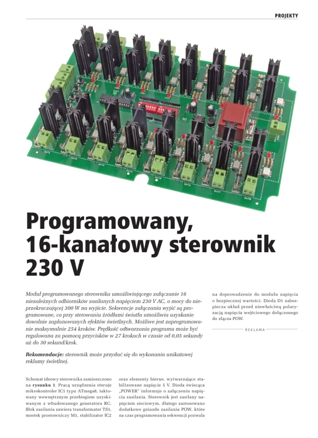
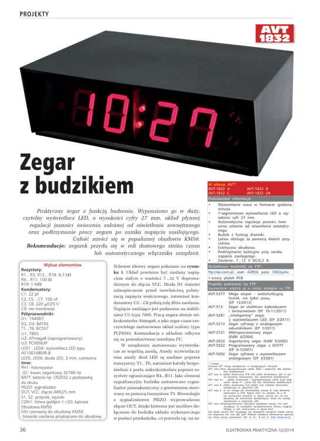
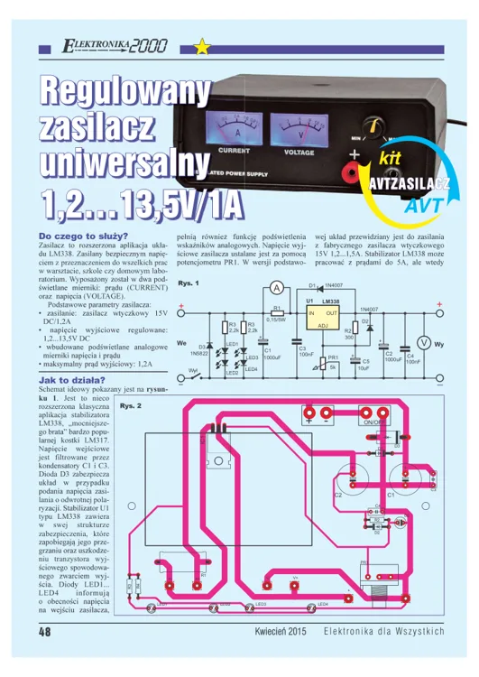
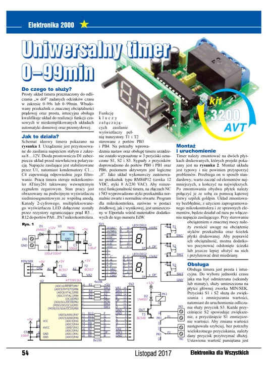
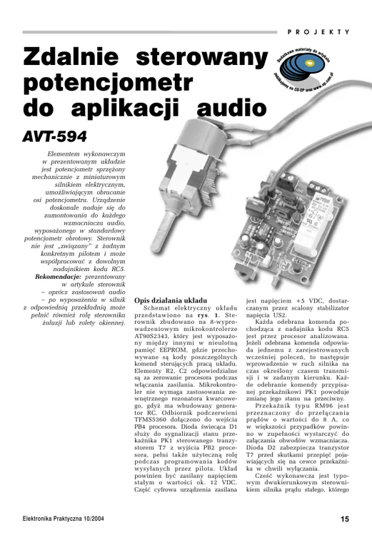
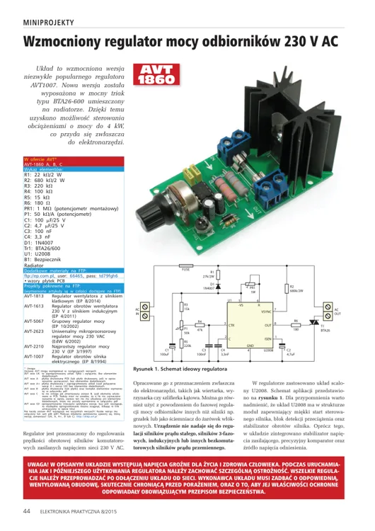
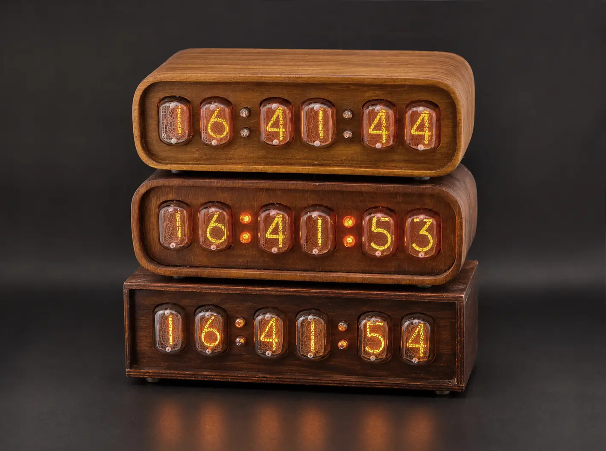
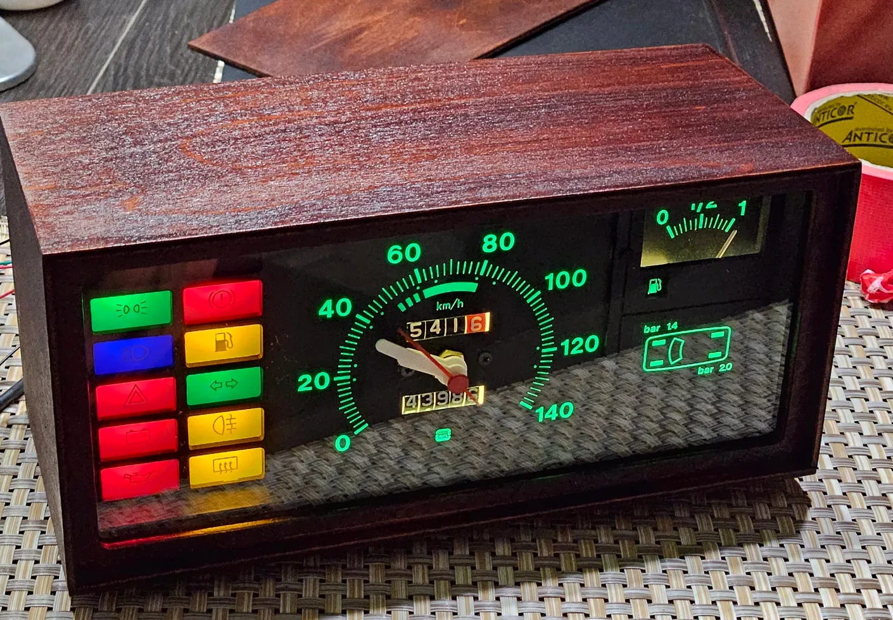

Programowany, 16-kanałowy sterownik 230 V
Sterownik umożliwiający programowanie pracy szesnastu kanałów wyjściowych. Projekt z zakresu automatyki i sterowania odbiornikami sieciowymi.
Elektronika, projektowanie PCB, prototypowanie i przygotowanie urządzeń do produkcji. Publikacje techniczne i autorskie konstrukcje.
Projekty i publikacjeAutorskie konstrukcjeWybrane projekty mojego autorstwa opublikowane w prasie elektronicznej. Więcej realizacji prezentuję w katalogu projektów i publikacji.

Sterownik umożliwiający programowanie pracy szesnastu kanałów wyjściowych. Projekt z zakresu automatyki i sterowania odbiornikami sieciowymi.

Zegar elektroniczny z alarmem, układem RTC i automatyczną regulacją jasności wyświetlacza.

Regulowany zasilacz warsztatowy z układem LM338 oraz analogowym pomiarem napięcia i prądu.

Układ czasowy umożliwiający nastawienie czasu pracy w zakresie od 0 do 99 minut. Praktyczne rozwiązanie do sterowania urządzeniami wymagającymi odmierzania czasu.

Regulacja poziomu sygnału audio za pomocą potencjometru z napędem silnikowym, sterowanego zdalnie.

Regulator przeznaczony do sterowania mocą odbiorników zasilanych napięciem sieciowym 230 V AC.
Wybrane realizacje obejmujące projektowanie elektroniki, integrację urządzeń, opracowywanie obudów oraz wykonanie warsztatowe.

Autorskie urządzenia z elektronicznym sterowaniem czasowym. Projekt obejmował własną elektronikę i integrację podzespołów w obudowie.

Samodzielnie zaprojektowane podstawki pod lampy Nixie oraz obudowy ze sklejki. W zegarach wykorzystano gotowe moduły elektroniczne.

Autorska adaptacja samochodowego zestawu wskaźników do roli zegara dekoracyjnego. Własna elektronika, podświetlenie i drewniana obudowa.
Autorskie projekty modeli 3D obejmujące praktyczne akcesoria warsztatowe, elementy użytkowe oraz części do własnych konstrukcji. Projektowanie i druk 3D wykorzystuję do realizacji indywidualnych pomysłów i przygotowywania elementów wspomagających prototypowanie.
Ponad 25 lat doświadczenia w elektronice, projektowaniu, prototypowaniu, dokumentacji i przygotowaniu produkcji. Własne zaplecze warsztatowe, cięcie laserowe i druk 3D.
Więcej o doświadczeniu →